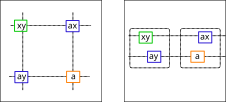
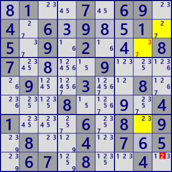

XY-Wing
XY-Wingは、候補数字が2個のセル(bivalue cell)によるLockedの解析アルゴリズムです。
次の図で解説します。
青枠と緑枠の3セルがbivalueで互いに弱いリンクで結びついているとき、青枠セルと弱いリンクで繋がるオレンジ枠のセルの候補数字はaではありません。

XY-Wingの例を示します。



.1..7.69. 4.6.9..1. 5.9.2...8 7....9... .9..3..8. ...8....4 1...6.8.9 .8..4.7.5 .67.8..4. Puzzle
81..7.69. 4.639851. 5.9.2.4.8 748.19.5. .95.3..8. ..185.9.4 154.6.8.9 .8..4.765 .67.8..4. Current
6..1....7 ..18.73.. .2.3...9. .5.9.8641 ......... 1482.6.3. .7...2.1. ..64.18.. 8....3..4 Puzzle
683129457 591847326 .2.365198 .5.938641 369.14.8. 1482.6.3. .7.682.13 .364.187. 81...3.64 Current
6..1....7 ..18.73.. .2.3...9. .5.9.8641 ......... 1482.6.3. .7...2.1. ..64.18.. 8....3..4 Puzzle
683129457 591847326 .2.365198 .5.938641 369.14.8. 1482.6.3. .7.682.13 .364.187. 81...3.64 Current